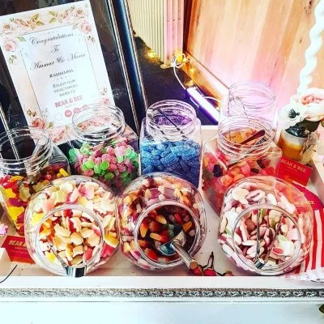

Este es el servicio
Sea cual sea el evento que esté planeando, tenemos muchas opciones para adaptarnos a sus demandas. Ofrecemos bolsas y cajas de dulces personalizadas y personalizadas, así como un carrito de dulces para ocasiones más grandes.
Funciones corporativas
Nuestros paquetes son una excelente manera de tratar a su personal o usarlos como obsequios para sus clientes.
Siempre estamos abiertos a nuevas empresas, así que envíenos un correo electrónico con su consulta. Estaremos encantados de discutir sus requisitos y siempre responderemos rápidamente. ¡Esperamos con interés escuchar de usted!.
Golosinas para cumpleaños
Si quieres golosinas originales para cumpleaños primero debes pensar en los gustos de esa persona especial. ¡Ese será el punto de partida!Lo más común es colocar caramelo… También bolsas de gomitas surtidas o regalices y piruletas. Pero no olvides los chocolates… ¡Son los protagonistas de las bolsas de golosinas originales!No escatimes en gastos ni en creatividad. ¡Tu caja debe quedar repleta de golosinas originales para fiestas!
